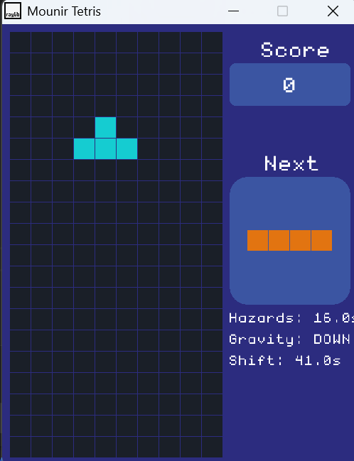
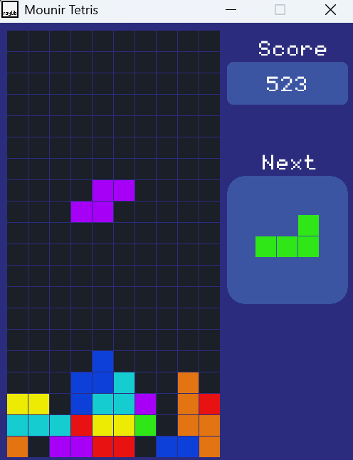

Tetris Reimagined



Project Overview
Tetris Reimagined is a complete from-scratch C++ implementation of the classic puzzle game, rebuilt with innovative physics systems and modern architectural patterns. Every system—from grid management to collision detection—was engineered from the ground up using the Raylib framework.
This project demonstrates advanced C++ programming, real-time game loop architecture, and creative game design that challenges traditional Tetris conventions with gravity manipulation and dynamic obstacles.
Core Technical Systems
🧩 Advanced Piece Management
Sophisticated piece spawning, rotation, and collision detection systems built from scratch.
class Game {
private:
std::vector> grid;
Piece currentPiece;
Piece nextPiece;
int score;
int level;
bool gameOver;
// Piece management
void spawnPiece() {
currentPiece = nextPiece;
nextPiece = getRandomPiece();
// Check for game over condition
if (checkCollision(currentPiece)) {
gameOver = true;
}
}
bool checkCollision(const Piece& piece) {
for (const auto& block : piece.blocks) {
Vector2 pos = {piece.position.x + block.x,
piece.position.y + block.y};
// Boundary checks
if (pos.x < 0 || pos.x >= GRID_WIDTH ||
pos.y >= GRID_HEIGHT) {
return true;
}
// Grid collision checks
if (pos.y >= 0 && grid[pos.y][pos.x] != 0) {
return true;
}
}
return false;
}
};
🔄 Multi-Directional Gravity System
Innovative gravity implementation allowing blocks to fall in any direction.
enum class GravityDirection {
DOWN, LEFT, RIGHT, UP
};
class GravitySystem {
private:
GravityDirection currentDirection;
float gravityForce;
public:
void updatePiece(Piece& piece) {
Vector2 gravityVector = getGravityVector();
piece.position.x += gravityVector.x;
piece.position.y += gravityVector.y;
if (checkCollision(piece)) {
// Revert movement and lock piece
piece.position.x -= gravityVector.x;
piece.position.y -= gravityVector.y;
lockPiece(piece);
}
}
Vector2 getGravityVector() const {
switch (currentDirection) {
case GravityDirection::DOWN:
return {0, gravityForce};
case GravityDirection::LEFT:
return {-gravityForce, 0};
case GravityDirection::RIGHT:
return {gravityForce, 0};
case GravityDirection::UP:
return {0, -gravityForce};
default:
return {0, gravityForce};
}
}
void shiftGravity() {
// Cycle through gravity directions
currentDirection = static_cast(
(static_cast(currentDirection) + 1) % 4
);
}
};
🚧 Dynamic Blockade System
Procedural obstacle generation that adapts to player performance.
class ObstacleSystem {
private:
std::vector obstacles;
float spawnTimer;
float spawnInterval;
public:
void update(float deltaTime) {
spawnTimer += deltaTime;
if (spawnTimer >= spawnInterval) {
spawnObstacle();
spawnTimer = 0.0f;
// Adjust difficulty based on score
spawnInterval = std::max(0.5f, 3.0f - (score * 0.01f));
}
}
void spawnObstacle() {
Vector2 obstacle;
bool validPosition = false;
// Find valid spawn position
while (!validPosition) {
obstacle = {
static_cast(GetRandomValue(0, GRID_WIDTH - 1)),
static_cast(GetRandomValue(0, GRID_HEIGHT - 1))
};
validPosition = true;
// Check if position is already occupied
for (const auto& existing : obstacles) {
if (existing.x == obstacle.x && existing.y == obstacle.y) {
validPosition = false;
break;
}
}
}
obstacles.push_back(obstacle);
}
bool isObstacleAt(int x, int y) const {
for (const auto& obstacle : obstacles) {
if (static_cast(obstacle.x) == x &&
static_cast(obstacle.y) == y) {
return true;
}
}
return false;
}
};
🎯 Input & Rotation Systems
Precise input handling with wall kick mechanics and rotation validation.
class InputHandler {
private:
Game& game;
public:
void handleInput() {
// Piece movement
if (IsKeyPressed(KEY_LEFT)) {
movePiece(-1, 0);
}
if (IsKeyPressed(KEY_RIGHT)) {
movePiece(1, 0);
}
if (IsKeyPressed(KEY_DOWN)) {
movePiece(0, 1);
}
// Rotation with wall kick
if (IsKeyPressed(KEY_UP)) {
rotatePiece();
}
// Gravity shifting
if (IsKeyPressed(KEY_SPACE)) {
game.shiftGravity();
}
}
void rotatePiece() {
Piece rotated = currentPiece;
rotated.rotation = (rotated.rotation + 1) % 4;
// Apply rotation matrix
for (auto& block : rotated.blocks) {
Vector2 rotatedBlock = {-block.y, block.x};
block = rotatedBlock;
}
// Try wall kick offsets
std::vector kickOffsets = {
{0, 0}, {1, 0}, {-1, 0}, {0, 1}, {0, -1}
};
for (const auto& offset : kickOffsets) {
rotated.position.x += offset.x;
rotated.position.y += offset.y;
if (!checkCollision(rotated)) {
currentPiece = rotated;
return;
}
rotated.position.x -= offset.x;
rotated.position.y -= offset.y;
}
}
};
Technical Architecture & Design Patterns
- From-Scratch Implementation: Built entire game engine without relying on existing Tetris libraries or frameworks
- Modular System Design: Separated concerns into distinct systems (Input, Gravity, Scoring, Rendering)
- Real-time Physics: Implemented frame-rate independent game loop with fixed time steps
- Collision Detection: Developed efficient AABB collision system with wall kick mechanics
- Memory Management: Optimized grid data structures and piece allocation
- Algorithm Optimization: Efficient line clearing and piece rotation algorithms
Explore the Code
Complete C++ implementation available on GitHub, featuring detailed documentation and build instructions.